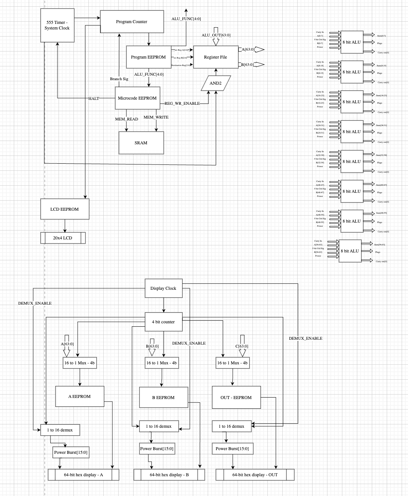

Dispatch · Architecture
The bottleneck was the instruction word, not the ALU.
Convention says a 32-bit machine gets a 32-bit instruction. That fit was always tight. No honest fourth register. Opcode and immediate fighting over the same bits. A 40-bit word was the proposed escape.
After roughly three months on Tomato32, the recurring bottleneck has been instruction width, not the ALU itself. Convention says a 32-bit machine gets a 32-bit instruction word. That fit was always tight: opcode, three register fields, and bank select fill 32 bits — with no room for a fourth operand, and the lower bits double-booked as immediate overlay.
The CPU was designed around a powerful ALU but forced to speak about it through a cramped encoding. alu_out = adder(f(a,b,c), g(a,b,c), carry_in). At the bit-slice that is hundreds of thousands of LUT programs. A 10-bit opcode indexes a thousand microcode rows. Matching every theoretical LUT pair to its own opcode was never the goal.

Fig. — The wide drawingBefore the word-width argument · paper machine
The real loss in the 32-bit design is narrower: no honest fourth register field — C was aliased to dest readback. Opcode space and immediate layout fighting over the same bits. Instruction word not equal to machine word.
This entry proposes the 40-bit escape. The next day's entry takes it back. Both belong in the vault. The argument is the point.